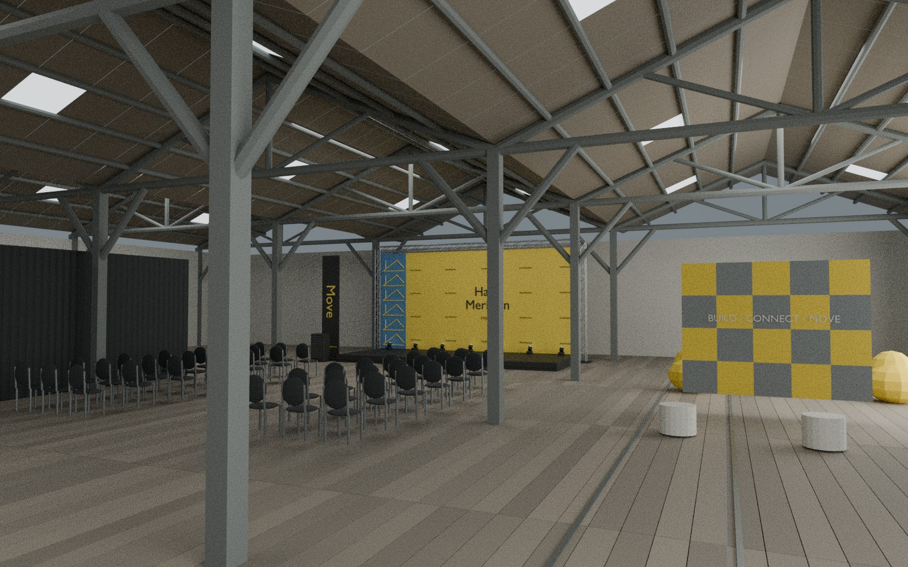
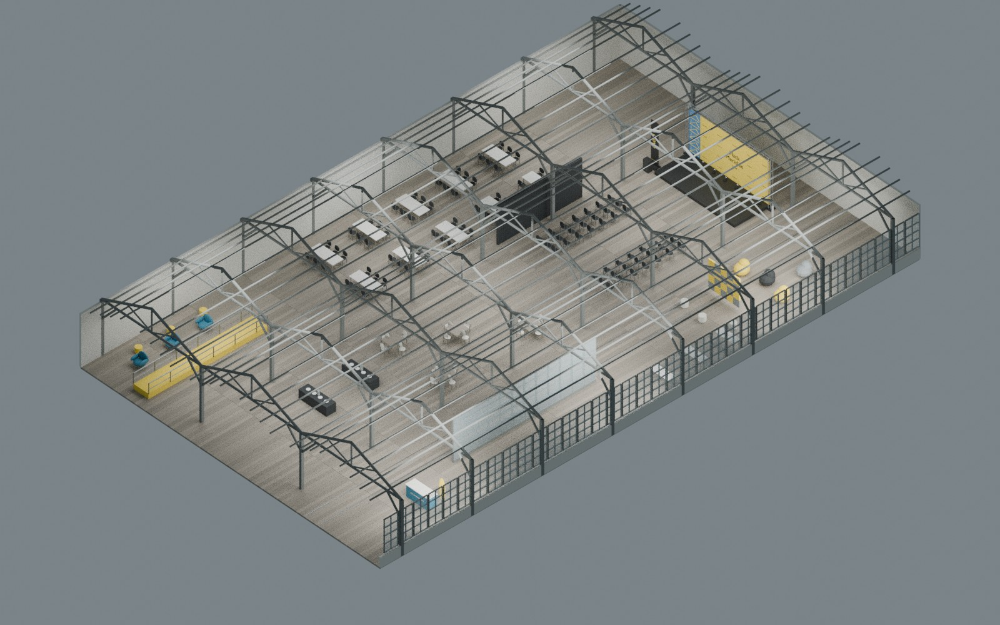

EL ESPACIO DONDE CONSTRUIMOS
Dentro
de ONE16.
Lisboa, desde dentro. Un recorrido por el espacio y el montaje de Stellar HackMeridian.
Basado en el recorrido en video del evento. Geometría local y conexiones estimadas; no es un levantamiento técnico.

UN RECORRIDO / OCHO ZONAS
De la rampa
al escenario.
El carácter industrial permanece: estructura de madera, raíles en el suelo y luz del río. El evento añade zonas de trabajo, encuentro y un escenario amarillo.
Rampa y lounge → buffet → ventanas y sala acristalada → photo lounge → escenario → mesas de trabajo → auditorio → zona social.
Cómo se reconstruyó ↓
REFERENCIAS / ALCANCE
El lugar, documentado.
El recorrido, interpretado.
Espacio abierto publicado
Altura de techo publicada
Ventanas junto al río
Frente de ventanas publicado
Datos de la ficha técnica oficial de ONE16. El modelo representa la parte observada del recorrido, no la totalidad de los 3.200 m². El video permite reconocer materiales, mobiliario y zonas; no permite medir con precisión su posición, escala ni todas las conexiones. No se incluyen asistentes, credenciales ni imágenes privadas.
ONE16 · Fuente oficial ↗ HackMeridian · Evento ↗